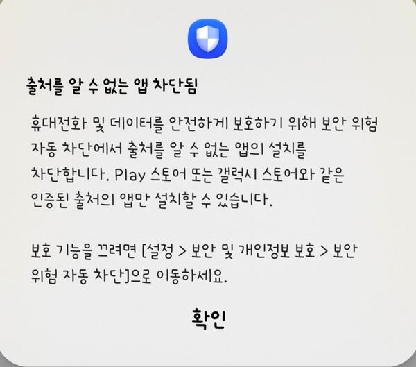

우리가족 우체통
가족대표 관리자 설명서
안녕하세요!
우리가족 우체통 앱을 설치하실 가족대표 관리자분들께 드리는 설명서예요.
처음 관리자 설정은 약간 어렵고 5~10분 정도 걸려요.
여러분이 무료로 사용할 수 있도록 개인 서버를 만드는 과정이에요.
막히는 부분이 있다면 언제라도 DM 주세요.
감사합니다 :)
인스타그램 @dadada._.family 로 DM 보내기어떤 앱인가요?
아이들이 태블릿으로 할머니 할아버지, 엄마 아빠에게 안부 편지를 보내는 우리 가족만의 우체통이에요.
- 1타자를 못 쳐도 그림 말 카드를 누르면 보내져요.
- 2한글을 몰라도 목소리로 보내요.
- 3말을 잘 못해도 손글씨 낙서나 사진으로 보내요.
- ♥가족은 폰에서 알림으로 받고, 짧은 답장 단추로 바로 답해요. 태블릿은 답장을 소리 내어 읽어 줘요.
- 3아이는 한 시간에 3번까지만 보낼 수 있어서 수백 번 보낼 걱정이 없어요.
준비물
- ✓안드로이드 폰 (가족대표 관리자인 엄마나 아빠 폰)
- ✓구글 계정 (지메일 주소)
- ✓아이가 쓸 안드로이드 태블릿이나 폰 한 대
- ✓5~10분
돈은 들지 않아요. 편지는 가족대표 관리자가 직접 만든 구글 Firebase 저장 공간에만 들어가요. 초대 링크를 받은 가족만 볼 수 있고, 앱을 만든 사람(졔)도 볼 수 없어요. 그래서 초대 링크는 가족에게만 보내 주세요.
여기서는 앱 파일이 잘 안 받아질 수 있어요. 화면 오른쪽 위 ⋮ 또는 ··· 를 누르고 「Chrome에서 열기」(다른 브라우저로 열기)를 눌러 주세요.
크롬에서 열기이렇게 하면 돼요
- 1가족대표 관리자 폰에 앱 깔기
아래 단추를 눌러요.
깔 때 겁주는 창이 떠요. 이렇게 누르세요
맨 먼저 「출처를 알 수 없는 앱 차단됨」이 뜨면
삼성 폰의 보호 기능이 켜져 있어서 그래요. 이렇게 잠깐 꺼 주세요.
설정 → 보안 및 개인정보 보호 → 보안 위험 자동 차단 → 스위치 끄기
그다음 다시 설치하면 돼요. 설치가 끝나면 같은 곳에서 다시 켜 두세요.

① 「유해한 파일일 수도 있음」 → 무시하고 다운로드

카카오톡에서 받았다면, 「내 파일」 앱에 들어가야 내려받은 파일이 보여요!
② 내려받은 파일을 누르세요. 안 보이면 「내 파일」 앱 → 「다운로드」 안의 woochetong.apk

③ 「앱 설치가 권장되지 않음」 → 무시하고 설치

④ 「앱 검사 권장됨」 → 앱 검사

스토어에 올리지 않고 직접 나눠 드리는 앱이라 뜨는 안내예요.
- 2앱을 열고 「관리자예요」 누르기
앱이 여섯 단계로 하나씩 안내해요. 그림을 보면서 따라 하면 돼요. - ·2단계 「우리 집 저장 공간 연결」이 제일 길어요. 구글 Firebase에서 저장 공간을 만들고 주소를 붙여넣는 단계예요. 이것만 넘기면 끝난 거예요.
- 3가족 등록하고 방 만들기
아이와 받을 가족을 추가하고, 「서울가족」「부산가족」처럼 방을 만들어요. - 4초대장 보내기
마지막 단계에서 「초대장 복사하기」를 눌러 가족 카톡방에 붙여넣으면 돼요. 가족들은 링크와 가족 비번 4자리만 있으면 들어와요.
다른 가족은 Firebase 설정을 할 필요가 없어요. 가족대표 관리자만 한 번 하면 돼요.
자주 묻는 것
아이폰도 되나요?
앱은 안드로이드에서만 깔려요. 아이폰을 쓰는 가족은 초대장 페이지의 「웹으로 바로 이용」으로 들어올 수 있지만, 알림이 오지 않고 아직 충분히 시험하지 못했어요.
정말 무료인가요?
네. 구글 Firebase의 무료 요금제 안에서 써요. 한 가족이 쓰는 양으로는 한도를 넘기 어려워요. 다만 구글 정책이 바뀌면 달라질 수 있어요.
알림이 안 와요
앱을 처음 열 때 「알림 허용」을 눌러야 해요. 삼성 폰은 설정 → 애플리케이션 → 우리가족 우체통 → 배터리를 「제한 없음」으로 바꾸면 더 잘 와요.
하다가 막혔어요
막힌 화면을 캡처해서 DM으로 보내 주세요.
제작자 : 졔 / 인스타그램 @dadada._.family